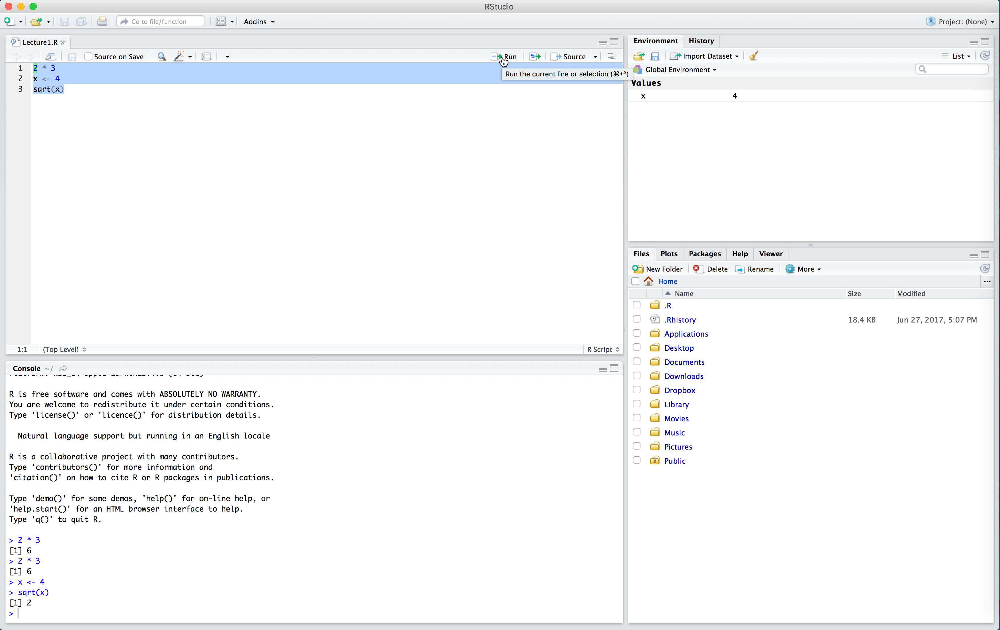

Lecture 1: R Basics & Into the Tidyverse
Setting our working directory
The working directory is a really powerful concept in R – it is where R saves any output files you create during an analysis and it is the place where R looks for any data you want to read in. When you installed R & RStudio, we asked you to create a folder on your Desktop called Moneyball. This will be your working directory for the duration of the course.
Everytime you open RStudio, it automatically sets the working directory to some default folder on your computer. To see what that is, we’ll open RStudio and look at the console pane.
Once we open RStudio, before we do anything, we need to tell R to change the working directory to our Moneyball folder. We can do this in several ways.
** Important: for this week, everytime you open up RStudio, the first thing you should do is set your working directory to the Moneyball folder.**
The tidyverse
So far we have seen only the most basic of R’s functionality. Arguable, one of the things that makes R so powerful is the ease with which users are able to define their own functions and release them to the public. As Hadley Wickham defines them, “[R] packages are fundamental units of reproducible code. They include reusable R functions, the documentation that describes how to use them, and sample data.” As of July 8, 2018, there are 12,725 packages available from the Comprehensive R Archive Network (CRAN). The scope of these packages is vast: there are some designed for scraping data from the web, pre-processing data to get it into an analyzable format, performing standard and specialized statistical analyses, and to publish your results. People have also released packages tailored to very specific applications like analyzing baseball data. There are also some more whimsical packages, like one that allow you to display your favorite XKCD comic strip!
For the rest of the course, we will be working within the tidyverse, which consists of several R packages for data manipulation, exploration, and visualization. They are all based on a common design philosophy, mostly developed by Hadley Wickham (whose name you will encounter a lot as you gain more experience with R). To access all of these packages, you first need to install them (if you have not already) with the following code:
The install.packages() function is one way of installing packages in R. You can also click on the Packages tab in your RStudio view and then click on Install to type in the package you want to install.
Now with the tidyverse suite of packages installed, we can load them with the following code:
When you do that, you’ll see a lot of output to the console, most of which you can safely ignore for now.
Reading in tabular data
Almost all of the data we will encounter in this course (and in the real world) will be tabular. Each row will represent a separate observation and each column will record a particular variable/measurement. For instance, the table below lists different statistics for several basketball players from the 2015-16 NBA regular season. The statistics are: * field goals made (FGM) * field goal attempts (FGA) * three pointers made (TPM) * three point attempts (TPA) * free throws made (FTM) * free throw attempts (FTA)
| PLAYER | SEASON | FGM | FGA | TPM | TPA | FTM | FTA |
|---|---|---|---|---|---|---|---|
| Stephen Curry | 2016 | 805 | 1597 | 402 | 887 | 363 | 400 |
| Damian Lillard | 2016 | 618 | 1474 | 229 | 610 | 414 | 464 |
| Jimmy Butler | 2016 | 470 | 1034 | 64 | 206 | 395 | 475 |
| James Harden | 2016 | 710 | 1617 | 236 | 657 | 720 | 837 |
| Kevin Durant | 2016 | 698 | 1381 | 186 | 480 | 447 | 498 |
| LeBron James | 2016 | 737 | 1416 | 87 | 282 | 359 | 491 |
| Dirk Nowitzki | 2016 | 498 | 1112 | 126 | 342 | 250 | 280 |
| Giannis Antetokounmpo | 2016 | 513 | 1013 | 28 | 110 | 296 | 409 |
| DeMarcus Cousins | 2016 | 601 | 1332 | 70 | 210 | 476 | 663 |
| Marc Gasol | 2016 | 328 | 707 | 2 | 3 | 203 | 245 |
Within the tidyverse, the standard way to store and manipulate tabular data like this is to use what is known as a tbl (pronounced tibble), synonymous with a spreadsheet or data.frame. At a high-level, a tbl is a two-dimensional array whose columns can be of different data types. That is, the first column might be characters (e.g. the names of athletes) and the second column can be numeric (e.g. the number of points scored).
Your RTA should have created a few folders in your working directory (please inform us if you do not have these folders). One of them is called “data” and this folder will contain almost all of the data we will work with during this course. All of these datasets are stored on your computer in comma-separated files, which have extension ‘.csv’.
Within the tidyverse, we can use the function read_csv() to read in a csv file that is stored on your computer and create a tibble containing all of the data. The dataset showed above is stored in a csv file named “nba_shooting_small.csv” in the “data” folder of our working directory. We will read it into R with the read_csv() function like so:
> nba_shooting_small <- read_csv(file = "data/nba_shooting_small.csv")
Parsed with column specification:
cols(
PLAYER = col_character(),
SEASON = col_double(),
FGM = col_double(),
FGA = col_double(),
TPM = col_double(),
TPA = col_double(),
FTA = col_double(),
FTM = col_double()
)Before proceeding, let us parse the syntax nba_shooting_small <- read_csv(...) The first thing to notice is that we’re using the assignment operator that we saw in Problem Set 0. This tells R that we want it to evalaute whatever is on the right-hand side (in this case read_csv(file = "data/nba_shooting_small.csv")) and assign the resulting evaluation to a new object called nba_shooting_small (which R will create). We called the function read_csv() with one argument file. This argument is the relative path of the CSV file that we want to read into R. Basically, R starts in the working directory and first looks for a folder called “data.” If it finds such a folder, it looks inside it for a file called “nba_shooting_small.csv.” If it finds the file, it creates a tbl called nba_shooting_small that contains all of the data.
When we type in the command and hit Enter or Return, we see some output printed to the console. This is read_csv telling us that it (a) found the file, (b) read it in successfully, and (c) identified the type of data stored in each column. We see, for instance, that the column named “PLAYER” contains character strings, and is parsed as col_character(). Similarly, the number of field goals made (“FGM”) is parsed as integer data.
When we print out our tbl, R outputs many things: the dimension (in this case, \(10 \times 7\)), the column names, the type of data included in each column, and then the actual data.
> nba_shooting_small
# A tibble: 10 x 8
PLAYER SEASON FGM FGA TPM TPA FTA FTM
<chr> <dbl> <dbl> <dbl> <dbl> <dbl> <dbl> <dbl>
1 Stephen Curry 2016 805 1597 402 887 363 400
2 Damian Lillard 2016 618 1474 229 610 414 464
3 Jimmy Butler 2016 470 1034 64 206 395 475
4 James Harden 2016 710 1617 236 657 720 837
5 Kevin Durant 2016 698 1381 186 480 447 498
6 LeBron James 2016 737 1416 87 282 359 491
7 Dirk Nowitzki 2016 498 1112 126 342 250 280
8 Giannis Antetokounmpo 2016 513 1013 28 110 296 409
9 DeMarcus Cousins 2016 601 1332 70 210 476 663
10 Marc Gasol 2016 328 707 2 3 203 245Wrangling Data
Now that we have read in our dataset, we’re ready to begin analyzing it. Very often, our analysis will involve some type of manipulation or wrangling of the data contained in the tbl. For instance, we may want to compute some new summary statistic based on the data in the table. In our NBA example, we could compute, say, each player’s field goal percentage. Alternatively, we could subset our data to find all players who took at least 100 three point shots and made at least 80% of their free throws. One package within the tidyverse is called dplyr and it contains five main functions corresponding to the most common things that you’ll end up doing to your data. Over the next two days, we will learn each of these:
- reorder the rows with
arrange(), - creating new variables that are functions of existing variables with
mutate(), - identify observations satisfying certain conditions with
filter(), - picking a subset of variables by names with
select(), - generating simple summaries of the data with
summarize().
Arranging Data
The arrange() function works by taking a tbl and a set of column names and sorting the data according to the values in these columns.
> arrange(nba_shooting_small, FGA)
# A tibble: 10 x 8
PLAYER SEASON FGM FGA TPM TPA FTA FTM
<chr> <dbl> <dbl> <dbl> <dbl> <dbl> <dbl> <dbl>
1 Marc Gasol 2016 328 707 2 3 203 245
2 Giannis Antetokounmpo 2016 513 1013 28 110 296 409
3 Jimmy Butler 2016 470 1034 64 206 395 475
4 Dirk Nowitzki 2016 498 1112 126 342 250 280
5 DeMarcus Cousins 2016 601 1332 70 210 476 663
6 Kevin Durant 2016 698 1381 186 480 447 498
7 LeBron James 2016 737 1416 87 282 359 491
8 Damian Lillard 2016 618 1474 229 610 414 464
9 Stephen Curry 2016 805 1597 402 887 363 400
10 James Harden 2016 710 1617 236 657 720 837The code above takes our tbl and sorts the rows in ascending order of FGA. We see that Marc Gasol took the fewest number of field goals (707) while James Harden and Stephen Curry attempted more than twice as many. We could also sort the players in descending order using desc():
> arrange(nba_shooting_small, desc(FGA))
# A tibble: 10 x 8
PLAYER SEASON FGM FGA TPM TPA FTA FTM
<chr> <dbl> <dbl> <dbl> <dbl> <dbl> <dbl> <dbl>
1 James Harden 2016 710 1617 236 657 720 837
2 Stephen Curry 2016 805 1597 402 887 363 400
3 Damian Lillard 2016 618 1474 229 610 414 464
4 LeBron James 2016 737 1416 87 282 359 491
5 Kevin Durant 2016 698 1381 186 480 447 498
6 DeMarcus Cousins 2016 601 1332 70 210 476 663
7 Dirk Nowitzki 2016 498 1112 126 342 250 280
8 Jimmy Butler 2016 470 1034 64 206 395 475
9 Giannis Antetokounmpo 2016 513 1013 28 110 296 409
10 Marc Gasol 2016 328 707 2 3 203 245In this small dataset, no two players attempted the same number of field goals. In larger datasets (like the one you’ll see in Problem Set 1), it can be the case that there are multiple rows with the same value in a given column. When arranging the rows of a tbl, to break ties, we can specify more than column. For instance, the code below sorts the players first by the number of field goal attempts and then by the number of three point attempts.
> arrange(nba_shooting_small, FGA, TPA)
# A tibble: 10 x 8
PLAYER SEASON FGM FGA TPM TPA FTA FTM
<chr> <dbl> <dbl> <dbl> <dbl> <dbl> <dbl> <dbl>
1 Marc Gasol 2016 328 707 2 3 203 245
2 Giannis Antetokounmpo 2016 513 1013 28 110 296 409
3 Jimmy Butler 2016 470 1034 64 206 395 475
4 Dirk Nowitzki 2016 498 1112 126 342 250 280
5 DeMarcus Cousins 2016 601 1332 70 210 476 663
6 Kevin Durant 2016 698 1381 186 480 447 498
7 LeBron James 2016 737 1416 87 282 359 491
8 Damian Lillard 2016 618 1474 229 610 414 464
9 Stephen Curry 2016 805 1597 402 887 363 400
10 James Harden 2016 710 1617 236 657 720 837Now consider the two lines of code:
> arrange(nba_shooting_small, PLAYER)
# A tibble: 10 x 8
PLAYER SEASON FGM FGA TPM TPA FTA FTM
<chr> <dbl> <dbl> <dbl> <dbl> <dbl> <dbl> <dbl>
1 Damian Lillard 2016 618 1474 229 610 414 464
2 DeMarcus Cousins 2016 601 1332 70 210 476 663
3 Dirk Nowitzki 2016 498 1112 126 342 250 280
4 Giannis Antetokounmpo 2016 513 1013 28 110 296 409
5 James Harden 2016 710 1617 236 657 720 837
6 Jimmy Butler 2016 470 1034 64 206 395 475
7 Kevin Durant 2016 698 1381 186 480 447 498
8 LeBron James 2016 737 1416 87 282 359 491
9 Marc Gasol 2016 328 707 2 3 203 245
10 Stephen Curry 2016 805 1597 402 887 363 400
> nba_shooting_small
# A tibble: 10 x 8
PLAYER SEASON FGM FGA TPM TPA FTA FTM
<chr> <dbl> <dbl> <dbl> <dbl> <dbl> <dbl> <dbl>
1 Stephen Curry 2016 805 1597 402 887 363 400
2 Damian Lillard 2016 618 1474 229 610 414 464
3 Jimmy Butler 2016 470 1034 64 206 395 475
4 James Harden 2016 710 1617 236 657 720 837
5 Kevin Durant 2016 698 1381 186 480 447 498
6 LeBron James 2016 737 1416 87 282 359 491
7 Dirk Nowitzki 2016 498 1112 126 342 250 280
8 Giannis Antetokounmpo 2016 513 1013 28 110 296 409
9 DeMarcus Cousins 2016 601 1332 70 210 476 663
10 Marc Gasol 2016 328 707 2 3 203 245In the first line, we’ve sorted the players in alphabet order of their first name. But when we print out our tbl, nba_shooting_small, we see that the players are no longer sorted. This is because dplyr (and most other R) functions never modify their input but work by creating a copy and modifying that copy. If we wanted to preserve the new ordering, we would have to overwrite nba_shooting_small using a combination of the assignment operator and arrange().
> nba_shooting_small <- arrange(nba_shooting_small, PLAYER)
> nba_shooting_small
# A tibble: 10 x 8
PLAYER SEASON FGM FGA TPM TPA FTA FTM
<chr> <dbl> <dbl> <dbl> <dbl> <dbl> <dbl> <dbl>
1 Damian Lillard 2016 618 1474 229 610 414 464
2 DeMarcus Cousins 2016 601 1332 70 210 476 663
3 Dirk Nowitzki 2016 498 1112 126 342 250 280
4 Giannis Antetokounmpo 2016 513 1013 28 110 296 409
5 James Harden 2016 710 1617 236 657 720 837
6 Jimmy Butler 2016 470 1034 64 206 395 475
7 Kevin Durant 2016 698 1381 186 480 447 498
8 LeBron James 2016 737 1416 87 282 359 491
9 Marc Gasol 2016 328 707 2 3 203 245
10 Stephen Curry 2016 805 1597 402 887 363 400Creating new variables from old
While arranging our data is useful, it is not quite sufficient to determine which player is the best shooter in our dataset. Perhaps the simplest way to compare players’ shooting ability is with field goal percentage (FGP). We can compute this percentage using the formula \(\text{FGP} = \frac{\text{FGA}}{\text{FGM}}.\) We use the function mutate() to add a column to our tbl.
> mutate(nba_shooting_small, FGP = FGA/FGM)
# A tibble: 10 x 9
PLAYER SEASON FGM FGA TPM TPA FTA FTM FGP
<chr> <dbl> <dbl> <dbl> <dbl> <dbl> <dbl> <dbl> <dbl>
1 Damian Lillard 2016 618 1474 229 610 414 464 2.39
2 DeMarcus Cousins 2016 601 1332 70 210 476 663 2.22
3 Dirk Nowitzki 2016 498 1112 126 342 250 280 2.23
4 Giannis Antetokounmpo 2016 513 1013 28 110 296 409 1.97
5 James Harden 2016 710 1617 236 657 720 837 2.28
6 Jimmy Butler 2016 470 1034 64 206 395 475 2.2
7 Kevin Durant 2016 698 1381 186 480 447 498 1.98
8 LeBron James 2016 737 1416 87 282 359 491 1.92
9 Marc Gasol 2016 328 707 2 3 203 245 2.16
10 Stephen Curry 2016 805 1597 402 887 363 400 1.98The syntax for mutate() looks kind of similar to arrange(): the first argument tells R what tbl we want to manipulate and the second argument tells R how to compute FGP. As expected, when we run this command, R returns a `tbl with a new column containing the field goal percentage for each of these 10 players. Just like with arrange(), if we call mutate() by itself, R will not add the new column to our existing data frame. In order to permanently add a column for field goal percentages to nba_shooting_small, we’re going to need to use the assignment operator.
It turns out that we can add multiple columns to a tbl at once by passing more arguments to mutate(), one for each column we wish to define.
> mutate(nba_shooting_small, FGP = FGA/FGM, TPP = TPM/TPA, FTP = FTM/FTA)
# A tibble: 10 x 11
PLAYER SEASON FGM FGA TPM TPA FTA FTM FGP TPP FTP
<chr> <dbl> <dbl> <dbl> <dbl> <dbl> <dbl> <dbl> <dbl> <dbl> <dbl>
1 Damian Lillard 2016 618 1474 229 610 414 464 2.39 0.375 1.12
2 DeMarcus Cousins 2016 601 1332 70 210 476 663 2.22 0.333 1.39
3 Dirk Nowitzki 2016 498 1112 126 342 250 280 2.23 0.368 1.12
4 Giannis Antetokounmpo 2016 513 1013 28 110 296 409 1.97 0.255 1.38
5 James Harden 2016 710 1617 236 657 720 837 2.28 0.359 1.16
6 Jimmy Butler 2016 470 1034 64 206 395 475 2.2 0.311 1.20
7 Kevin Durant 2016 698 1381 186 480 447 498 1.98 0.388 1.11
8 LeBron James 2016 737 1416 87 282 359 491 1.92 0.309 1.37
9 Marc Gasol 2016 328 707 2 3 203 245 2.16 0.667 1.21
10 Stephen Curry 2016 805 1597 402 887 363 400 1.98 0.453 1.10A quick digression: R Scripts
Up to this point, we have been working strictly within the R console, proceeding line-by-line. In the previous code block, we tried to add three columns to our tbl and the mutate call got a little bit over-whelming. Imagine trying to add five or six more columns simultaneously! As our commands become more and more complex, you’ll find that using the console can get pretty cramped. And if you make a mistake in entering your code, you’ll get an error and have to start all over again. Plus, when we start a new session of R Studio, the console is cleared. How can we save the commands we typed into R? We do so using an R Script.
An R Script is a file type which R recognizes as storing R commands and is saved as a _.R_s file. R Scripts are useful as we can edit our code before sending it to be run in the console.
We can start a new R Script by clicking on the top left symbol in RStudio and selecting “R Script”.

The untitled R Script will then appear in the top left hand box of RStudio.

In the R Script, type the following:
2 * 3
x <- 4
sqrt(x)Now our code is just sitting in the R Script. To run the code (that is, evaluate it in the console) we click the “Run” button in the top right of the script. This will run one line of code at a time - whichever line the cursor is on. Place your cursor on the first line and click “Run”. Observe how 2 * 3 now appears in the console, as well as the output 6.

If we want to run multiple lines at once, we highlight them all and click “Run”.

Note in the above that we had to run x <- 4 before sqrt(x). We need to define our variables first and run this code in the console before performing calculations with those variables. The console can’t “see” the script unless you run the code in the script.
One very nice thing about RStudio’s script editor is that it will highlight syntax errors with a red squiggly line and a red cross in the sidebar. If you move your mouse over the line, a pop-up will appear that can help you diagnose the potential problem.
Another advantage of R scripts is that you can add comments to your code, which are preceded by the pound sign / hash sign #. Comments are useful because they allow you to explain what your code is doing. Throughout the rest of this course, we will be working almost exclusively with R scripts rather than directly entering commands into the console.
Back to the NBA data
One huge advantage with working with R script is the ability to separate commands onto multiple lines. For instance, to add columns for FGP, FTP, and TPP to our tbl, we can write the following in our script window.
> nba_shooting_small <-
+ mutate(nba_shooting_small,
+ FGP = FGM / FGA,
+ TPP = TPM / TPA,
+ FTP = FTM / FTA)Notice how we have separated our command into multiple lines. This makes our script much easier to read.
Chaining commands together with pipes
When dealing with data, we often want to chain multiple commands together. People will often describe the entire process of reading in data, wrangling it with commands like mutate and arrange, then creating visuals and models, as the data analysis pipeline. The pipe operator %>% is a convenient tool in the tidyverse that allows us to create a sequence of code to analyze data, such as the following code to arrange in descending order the players based on the rate of field goal attempts that are three point attempts:
> nba_shooting_small %>%
+ mutate(three_point_fg_rate = TPA / FGA) %>%
+ arrange(desc(three_point_fg_rate))Let’s break down what’s happening here. First, R “pipes” the tbl nba_shooting_small into into mutate to create a new variable three_point_fg_rate. Then it pipes the result of this mutate into arrange to sort the players based on this newly created column. With this pipeline we have created a new variable, and view the players in descending order without having to specify the data nba_shooting_small more than once! The sequence of analysis flow naturally top-to-bottom and puts the emphasis on the actions being carried out by the analyst (like the functions mutate and arrange) and the final output rather than a bunch of temporary tbl’s that may not be of much interest.
We will be using the pipe %>% operator for the remainder of the week, and you will see how convenient it is to use in the next lecture when making visualizations. Next, proceed to practice the basics of reading and wrangling data in Problem Set 1.
NOTE: There are several conventions for formating code when using the pipe. See here and here for much more information and for some advanced “special” pipes.